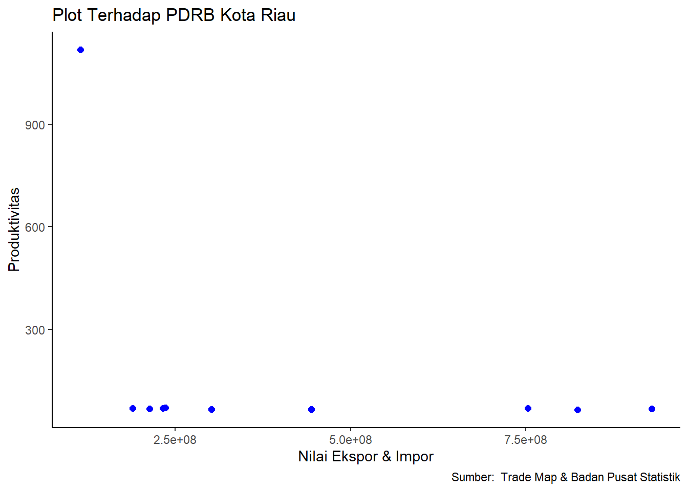

Dampak Ekspor Dan Impor Jagung Terhadap Produktivitas Jagung Di Sumatera Barat
Metode Penelitian Politeknik APP Jakarta
Author
Hafizd Razaan Zaidan (220204128)
Published
January 15, 2024
Politeknik APP Jakarta
1 Pendahuluan
1.1 Latar Belakang
Indonesia, yang merupakan negara agraris di Asia, dikenal karena produksi komoditas pertaniannya yang melimpah seperti sayuran dan buah-buahan. Sebagian besar penduduknya menggantungkan hidup pada pertanian, didukung oleh sumber daya alam yang kaya yang berkontribusi signifikan terhadap kebutuhan domestik dan perekonomian negara. Sektor pertanian memainkan peran penting dalam pembangunan Indonesia, terlihat dari kontribusinya terhadap pertumbuhan Produk Domestik Bruto (PDB). Selain itu, pertanian berfungsi sebagai sumber utama lapangan kerja, pendapatan bagi penduduk, pengentasan kemiskinan, penerimaan devisa, dan berperan penting dalam sektor pembangunan lainnya.
Di antara berbagai produk pertanian, jagung menjadi salah satu komoditas utama setelah padi dan dianggap sebagai pengganti potensial untuk beras sebagai pangan pokok. Jagung memiliki nilai strategis dan ekonomis, berperan sebagai sumber utama karbohidrat dan protein, serta bahan baku industri. Menurut Kementerian Pertanian, jagung memiliki empat fungsi (4F): pangan, pakan, bahan bakar, dan bahan baku industri. Sekitar 60% jagung digunakan sebagai pakan ternak, khususnya unggas, sedangkan hanya sekitar 30% digunakan untuk konsumsi manusia, dan sisanya untuk keperluan industri dan benih. Sumatera Barat memiliki peran yang signifikan dalam sektor pertanian di Indonesia, termasuk produksi jagung sebagai salah satu komoditas utama. Jagung memiliki peranan penting dalam pemenuhan kebutuhan pangan dan kestabilan ekonomi daerah tersebut. Saat ini, perdagangan internasional semakin menjadi bagian integral dalam perekonomian global, termasuk ekspor dan impor jagung.
Pada satu sisi, ekspor jagung dapat membuka peluang pasar baru bagi petani di Sumatera Barat, meningkatkan pendapatan, dan memberikan kontribusi positif terhadap perekonomian daerah. Namun, di sisi lain, impor jagung dapat berpotensi mempengaruhi produktivitas lokal dengan membawa persaingan yang lebih ketat. oleh karena itu Penelitian ini diharapkan dapat memberikan wawasan mendalam mengenai interaksi kompleks antara perdagangan jagung dengan produktivitas di tingkat lokal, membantu pemerintah daerah, petani, dan pelaku industri untuk mengembangkan strategi yang berkelanjutan dan mengoptimalkan manfaat ekspor dan impor jagung bagi Sumatera Barat. Dengan demikian, latar belakang ini menjadi penting untuk merinci kerangka penelitian yang akan dilakukan dan memotivasi penelitian lebih lanjut dalam konteks hubungan antara ekspor, impor, dan produktivitas jagung di daerah ini. ### Ruang Lingkup
Dalam penelitian ini, peneliti memfokuskan penelitiannya pada data dari Trade Map dan Badan Pusat Statistik. Penelitian ini mencakup tiga variabel utama, yaitu nilai ekspor jagung Indonesia, nilai impor jagung Indonesia, dan nilai produktivitas jagung di Sumatera Barat. Data yang digunakan dalam penelitian ini bersifat time series, meliputi periode 2013-2022. Data ini menjadi fokus utama penelitian untuk menggali informasi dan insight terkait dengan tren dan pola yang terkait dengan ekspor jagung, impor jagung, dan produktivitas jagung di wilayah Sumatra Barat selama periode tersebut.
1.2 Rumusan Masalah
Berdasarkan pembahasan latar belakang di atas, rumusan masalah yang ditemukan adalah sebagai berikut:
bagaimana dampak impor jagung terhadap produktivitas jagung di Sumatera Utara
bagaimana dampak ekspor jagung terhadap produktivitas jagung di Sumatera Utara
1.3 Tujuan Penelitian
Berdasarkan latar belakang dan permasalahan yang ada maka tujuan dari penelitian ini adalah untuk mengetahui dampak ekspor dan impor jagung terhadap produktivitas jagung di Sumatra Utara Dan manfaat dari penelitian ini yaitu menjadi referensi untuk menambah pengetahuan baik untuk penulis, instansi dan masyarakaat Indonesia untuk mengetahui bagaimana dampak ekspor dan impor jagung terhadap produktivitas jagung di Sumatra Barat.
1.4 Package
Packages yang digunakan sebagai berikut:
library(tidyverse)
── Attaching core tidyverse packages ──────────────────────── tidyverse 2.0.0 ──
✔ dplyr 1.1.4 ✔ readr 2.1.4
✔ forcats 1.0.0 ✔ stringr 1.5.1
✔ ggplot2 3.4.4 ✔ tibble 3.2.1
✔ lubridate 1.9.3 ✔ tidyr 1.3.0
✔ purrr 1.0.2
── Conflicts ────────────────────────────────────────── tidyverse_conflicts() ──
✖ dplyr::filter() masks stats::filter()
✖ dplyr::lag() masks stats::lag()
ℹ Use the conflicted package (<http://conflicted.r-lib.org/>) to force all conflicts to become errors
library(readxl)library(WDI)
2 Studi Pustaka
2.1 Ekspor
Ekspor merujuk pada proses pengeluaran barang dari wilayah pabean Indonesia untuk dikirim ke luar negeri, sesuai dengan ketentuan peraturan kepabeanan yang berlaku, seperti yang dijelaskan oleh Marolop Tanjung (2011). Dalam konteks lain, ekspor dapat diartikan sebagai tindakan penjualan komoditas di Indonesia kepada negara lain, dengan harapan menerima pembayaran dalam mata uang asing, serta melibatkan penggunaan bahasa asing, sebagaimana dikemukakan oleh Amir M. S (2004). Menurut definisi dari Kementerian Perdagangan (Kemendag), ekspor merupakan kegiatan mengeluarkan barang dari wilayah pabean Indonesia menuju wilayah pabean negara lain. Proses ekspor dimulai dengan adanya penawaran dari salah satu pihak yang kemudian disetujui oleh pihak lain melalui kontrak penjualan, baik dari pihak eksportir maupun importir.
2.2 Impor
Impor merupakan proses memasukkan barang ke dalam wilayah pabean suatu negara. Berbeda dengan ekspor yang dapat meningkatkan pendapatan nasional, impor memiliki dampak penambahan pengeluaran dan penurunan pendapatan nasional suatu daerah. Sukirno (2011) menyatakan bahwa arus barang impor dapat menyebabkan keluarnya atau bocornya sebagian dari aliran pengeluaran sektor rumah tangga ke sektor perusahaan, yang pada akhirnya dapat menurunkan pendapatan nasional yang mungkin dapat dicapai. Meskipun demikian, impor juga memiliki sisi positif, yakni membantu negara memenuhi kebutuhan dalam negeri jika barang atau jasa yang diimpor tidak tersedia di negara atau daerah tersebut. Hal ini sejalan dengan konsep teori Hecksher-Ohlin yang dijelaskan oleh Appleyeard, Field, dan Cobb (2008), yang menyatakan bahwa suatu negara akan mengimpor produk atau barang yang menggunakan faktor produksi yang tidak atau jarang dimiliki oleh negara tersebut. Kegiatan ini dapat menjadi menguntungkan bagi negara tersebut dibandingkan dengan mencoba memproduksi sendiri secara tidak efisien.
2.3 Produktivitas
Menurut Busro (2018), Hasibuan menyatakan bahwa produktivitas adalah perbandingan antara hasil (output) dan masukan (input). Peningkatan produktivitas dianggap dapat meningkatkan efisiensi dalam hal waktu, bahan, dan tenaga, serta meningkatkan sistem kerja, teknik produksi, dan keterampilan tenaga kerja. Dalam pandangan Handoko, juga dikutip oleh Busro (2018), produktivitas dipahami sebagai sikap mental dan upaya manusia untuk mencapai hasil yang lebih baik dengan menggunakan sumber daya seefektif mungkin, yang akhirnya diukur dengan masukan yang digunakan untuk mencapai hasil optimal.
2.4 Komoditi Jagung
Jagung (Zea mays L.) adalah salah satu tanaman pangan yang memiliki signifikansi penting, sejajar dengan gandum dan padi. Di Amerika Tengah dan Selatan, jagung berfungsi sebagai sumber utama karbohidrat dan menjadi alternatif pangan utama di Amerika Serikat. Beberapa komunitas di Indonesia, seperti di Madura dan Nusa Tenggara, juga mengandalkan jagung sebagai makanan pokok. Selain itu, jagung memiliki beragam penggunaan, termasuk sebagai pakan ternak, bahan dasar pembuatan minyak, tepung jagung (maizena) dari biji jagung, dan bahan baku untuk industri. Jagung adalah tanaman musiman dengan masa tanam berkisar antara 80-150 hari, tergantung pada kondisi cuaca. Tahap awal pertumbuhannya bersifat vegetatif, sedangkan tahap menuju panen merupakan fase generatif.
3 Metode Penelitian
3.1 Data
Tahun | Nilai Ekspor | Nilai Ekspor | Produktivitas |
| US Dollar | US Dollar | Kwintal/Hektar |
Dalam penelitian ini, metode analisis yang diterapkan mencakup metode kuantitatif dan deskriptif. Analisis kuantitatif melibatkan perhitungan angka-angka untuk mengidentifikasi faktor-faktor yang memengaruhi produktivitas jagung di Sumatra Utara. Sementara itu, metode deskriptif digunakan untuk menyajikan gambaran sistematis dan faktual mengenai dampak ekspor dan impor terhadap produktivitas jagung di Sumatra Utara, dengan mempertimbangkan variabel ekspor, impor, dan produktivitas. Pendekatan kuantitatif diterapkan dengan menerapkan model regresi linier. Secara lebih rinci, model tersebut dapat dijelaskan sebagai berikut:
\[
y_{t}=\beta_0 + \beta_1 x_1+\beta_2 x_2+\mu_t
\] Keterangan : Y = Pertumbuhan Ekonomi
\[x_1\]= Total Ekspor
\[x_2\]= Total Impor
\[u_t\] = Error
4 Pembahasan
4.1 Pembahasan masalah
Pada bagian ini dapat ditampilkan data yang telah dikumpulkan :
setwd('C:/Metopel/UAS - Fawwazky Raja Putra Kiswandi')read_excel("latihan1.xlsx")
Diketahui : X = Nilai Ekspor Kelapa Sawit Y = PDRB Kota Riau
library("readxl")dat<-read_excel("data1.xlsx")library(ggplot2)ggplot(data=dat, aes(x=X+Y, y=S))+geom_point(color='blue', size=2)+labs(title="Plot Terhadap PDRB Kota Riau",x="Nilai Ekspor & Impor",y="Produktivitas",caption ="Sumber: Trade Map & Badan Pusat Statistik") +theme_classic()

4.2 Analisis masalah
Hasil pengaruh nilai ekspor terhadap PDRB Kota Riau diestimasi menggunakan regresi univariat. Hasilnya ditunjukkan sebagai berikut:
Call:
lm(formula = S ~ X + Y, data = dat)
Residuals:
Min 1Q Median 3Q Max
-250.02 -209.42 -18.53 32.62 765.52
Coefficients:
Estimate Std. Error t value Pr(>|t|)
(Intercept) 3.987e+02 2.071e+02 1.925 0.0956 .
X -3.439e-06 4.289e-06 -0.802 0.4490
Y -3.655e-07 3.817e-07 -0.958 0.3702
---
Signif. codes: 0 '***' 0.001 '**' 0.01 '*' 0.05 '.' 0.1 ' ' 1
Residual standard error: 338.9 on 7 degrees of freedom
Multiple R-squared: 0.1914, Adjusted R-squared: -0.0396
F-statistic: 0.8286 on 2 and 7 DF, p-value: 0.4754
Hasil di atas mencerminkan hasil estimasi Ordinary Least Squares (OLS) menggunakan model regresi multivariat. Hasil regresi tersebut dimanfaatkan untuk memahami keterkaitan antara produktivitas jagung di Indonesia (variabel dependen) dengan nilai ekspor dan impor jagung (variabel independen). Berdasarkan hasil regresi, terdapat nilai F sebesar 0.8286 dengan probabilitas sebesar 0.4754. Artinya, tidak terdapat pengaruh signifikan terhadap produktivitas jagung di Indonesia selama periode 2013-2022. Nilai R menunjukkan seberapa besar variabel independen memengaruhi variabel dependen. Koefisien determinasi R sebesar 3,96%, menunjukkan bahwa hanya sebagian kecil dari variasi produktivitas jagung dapat dijelaskan oleh nilai ekspor dan impor, sementara 96,04% sisanya dipengaruhi oleh faktor lain yang tidak dimasukkan dalam penelitian ini.
5 Kesimpulan
Keterkaitan antara dampak nilai ekspor dan impor jagung terhadap produktivitas jagung Indonesia selama periode 2013-2022 mengindikasikan adanya hubungan yang kurang signifikan. Hubungan antara produktivitas jagung Indonesia dengan nilai ekspor dan impor jagung tercatat sebagai hubungan yang lemah. Penilaian terhadap dampak nilai ekspor dan impor jagung menunjukkan kecenderungan nilai yang negatif, namun pengaruhnya tidak begitu kuat terhadap produktivitas jagung Indonesia. Oleh karena itu, meskipun terdapat korelasi antara variabel-variabel tersebut, namun dampaknya tidak begitu dominan. Dibutuhkan adanya faktor-faktor lain yang menunjukkan peran penting dalam mengatur produktivitas jagung di Indonesia.
6 Referensi
Badan Pusat Statistik. (2022). Retrieved January 14, 2024, from https://sumbar.bps.go.id/indicator/53/58/1/luas-panen-produksi-dan-produktivitas-jagung.html
ITC Trade Map. (2022). Retrieved January 14, 2024, from https://www.trademap.org/
Mughni, M. E. (2017). Pengaruh Variabel Makro Terhadap Produktivitas Jagung Di Indonesia.
Utomo, S. (2012). Dampak impor dan ekspor jagung terhadap produktivitas jagung di Indonesia. Etikonomi, 11(2).
Pertanian, K. (2021). Analisis Kinerja Perdagangan Jagung. Pusat Data Dan Sistem Informasi Pertanian Sekretariat Jenderal Kementerian Pertanian 2021, 5–24.